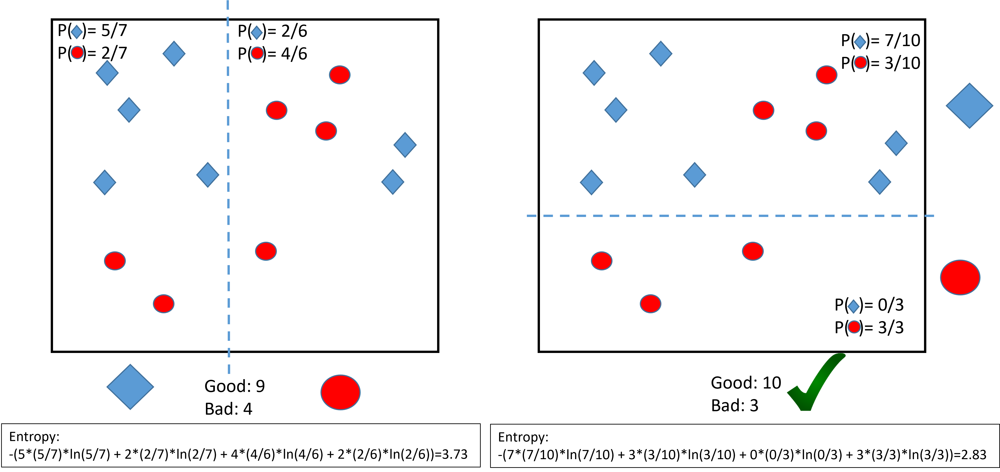

Decision Trees
Concept
CART
CART stands for Classification And Regression Trees. It consists of
A hierarchical set of binary rules,
A representation in a shape of a tree.
It applies to both regression and classification tasks. The Iris data has 105 data; with the classes equally divided in 35 observations.
In this case the rule is that if Petal length \(< 2.45\) then Setosa, else if Petal width \(< 1.65\) then Versicolor, else Virginica.
The prediction formula
The set of rules including the order of the features and the thresholds at each node can be embedded into a set of parameters \(\theta\).
After the training, the tree contains of final nodes. We use the notation below,
Applying the rules to features \(x\) send the instance \((y,x)\) to the final node that we call \(N(x)\).
In the training set \((y_1,x_1), \ldots, (y_n,x_n)\), the set of instances that were sent to node \(N\) is called \(I(N)\). E.g., \(I(N)=\{1,3,4\}\) means that instances \((y_1,x_1),(y_3,x_3),(y_4,x_4)\) were sent to node \(N\).
The prediction for features \(x\) is noted \(f(x;\theta)\). That prediction only depends on the node to which \(x\) is sent. In other words, \[N(x) = N(x') \quad \Longrightarrow \quad f(x;\theta) = f(x';\theta).\]
The prediction formula: regression
For regression, \(f(x;\theta)\), the prediction for \(x\), is the mean of the \(y_i\)’s that were sent to the node of \(x\) during the training.
In more fancy terms, \[f(x;\theta) = \frac{1}{|I(N(x))|}\sum_{i \in I(N(x))} y_i.\]
The prediction formula: classification
For classification,
The node \(N(x)\) has a predicted probability vector: probabilities one each possible class \[p(x;\theta) = (p_1(x;\theta), \ldots, p_C(x;\theta)),\]
The prediction \(f(x;\theta)\) is the class that has highest probability: \[f(x;\theta) = \arg\max_{c=1,\ldots,C} p_c(x;\theta).\]
The predicted probabilities \(p(x;\theta)\) at node \(N(x)\) are the proportions of each class taken on all the instances sent to \(N(x)\) during the training.
In more fancy terms, for any class \(c\), \[p_c(x;\theta) = \frac{1}{|I(N(x))|}\sum_{i \in I(N(x))} 1_{\{y_i = c\}}.\]
The loss function: regression
For the regression case, the most used loss function is the MSE: \[\bar{\cal L}(\theta) = \frac{1}{n} \sum_{i=1}^n \left\{y_i - f(x_i;\theta)\right\}^2\]
For the classification case, the most used loss is the entropy. It is different from the one of logistic regression1. In the case of \(C\) classes, the entropy is \[\begin{aligned} {\cal L}(y, p) &=& - p_1 \log p_1 - p_2 \log p_2 - \cdots - p_C \log p_C\\ &=& - \sum_{c=1}^C p_C \log p_c.\end{aligned}\] A the global entropy is thus \[\begin{aligned} \bar{\cal L}(\theta) &=& - \sum_{i=1}^n\sum_{c=1}^C p_c(x_i;\theta) \log p_c(x_i;\theta).\end{aligned}\]
The loss function: classification
Other possible choices for the loss function are:
The classification error: \[{\cal L}(y,p) = 1 - p_y.\] If \(y=c\), then \(p_c\) should be large and \(1-p_c\) should be small.
The Gini index: \[{\cal L}(y,p) = p_1(1-p_1) + \cdots + p_C(1-p_C) = \sum_{c=1}^C p_c(1-p_c).\] This index is smaller if \(p\) has one large component and the other ones small (e.g., \((1,0,0,0)\)). It is thus minimum when the prediction is certain. For this, it is similar to the entropy.
The greedy algorithm
Finding the optimal \(\theta\) cannot be obtained using a Newton-Raphson algorithm because \(f(x;\theta)\) is not differentiable.
To obtain the optimal \(\hat{\theta}\), one should search among all possible splitting combinations. The complexity of such task is enormous and cannot be achieved even with the most powerful imaginable computers.
An approximate solution is obtained by the greedy algorithm.
The greedy algorithm
Splitting the data space
The tree splits the space into rectangles2. Below with two features:
Each rectangle is associated to one node and one prediction.
The greedy algorithm grows the tree step by step as follows:
Start with no partition,
Along each feature \(x_j\), find the best split of the training set by this feature. This gives \(p\) splits (one for each feature).
Compare the \(p\) splits and select the best one: the one diminishing the loss the most.
You obtain two nodes, \(N_1\) and \(N_2\), say. Repeat the above rule on each node until a stopping rule is reached (see later).
Example of classification:

Note: by convention \(0\times \ln 0 = 0\).
CART: a greedy algorithm
etc.
A greedy algorithm
Example of regression:
Stopping rule
The algorithm could go on splitting the feature space forever. Several stopping rules can be used. For example in R with rpart (see ?rpart.control):
minsplit: the minimum number of observations that must exist in a node in order for a split to be attempted (default is 20).cp: Any split that does not decrease the overall lack of fit by a factor of cp is not attempted (default to 0.1).minbucket: the minimum number of observations in any terminal node (default tominsplit/3).etc.
Even with these rules, once the tree is grown, it might be too large. The procedure of cutting nodes is called pruning the tree.
Interpretation
Interpretation
Trees can be interpreted by reading directly on the graph the link between the features and the outcome.
The most important feature is at the top of the graph. The first split influence the other ones.
The final nodes should be organized in a logical way to ease the reading. E.g.,
(regression) Low predictions to the left, high predictions to the right.
(binary) predictions "0" to the left, and "1" to the right.
Interpretation must be done with cautious. The tree structure is unstable: several trees can produce similar predictions. The greedy algorithm may just pick one at random.
Pruning
Occam’s razor
For linear and logistic regressions, the more variables are in the model, the more complex that model is. For trees, model complexities can be measured by the length of the tree: a shorter tree is more simple than a longer one. To apply Occan’s razor, one needs to shorten the tree without impeding too much its prediction quality. To prune the tree consists of cutting branches while maintaining enough prediction quality.
1-SE rule
There exist several ways to prune the tree. One of the most used is the 1-SE rule.
Build a long tree (using the default stopping rules)
For all the sub-trees compute the error of the tree
For the best tree (lowest error) compute the uncertainty on that error measure: the standard error SE.
Any tree whose error is below the lowest error plus one SE is considered equivalent to the best tree.
Select the shortest tree among those that are equivalent to the best one.
Technical details
The SE is computed using cross-validation (see later).
The 1-SE rule can be replaced by other rules (like cutting at a given CP, etc.).
In practice,
the pruning is not a guarantee to obtain a good model.
It should be used to simplify the model and avoid overfitting.
(empirical) it works well to build a very large tree then to prune it.